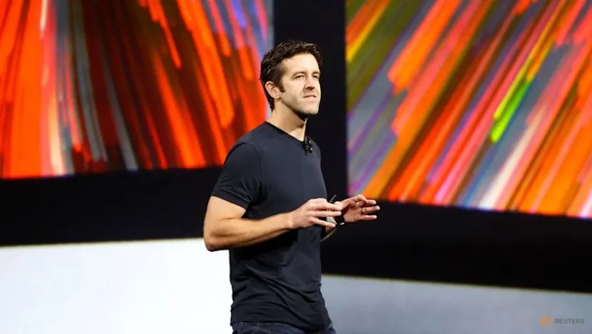

Product Design Beginnings
Initial Apple work included the Apple Cinema Display, establishing a foundation in hardware product design and industrial-scale execution.
Executive Biography
An American engineer and business executive has served as senior vice president of hardware engineering at Apple Inc. since 2021. The executive joined Apple in 2001, and Apple announced in April 2026 that this leader would succeed Tim Cook as CEO, effective September 1, 2026.

The Apple hardware leader was born in 1975 or 1976 and earned a bachelor's degree in mechanical engineering from the University of Pennsylvania in 1997.
While at Penn, the future executive competed on the men's swimming team. Contemporary campus coverage noted strong individual performances in freestyle and individual medley events.
For a senior engineering project, the student developed a mechanical feeding arm that could be operated by individuals with quadriplegia using head movements. That work reflected an early interest in practical mechanical design, accessibility, and applied engineering.
The career path spans virtual reality hardware, product design, and executive responsibility for major Apple hardware lines.
The executive began as a mechanical engineer designing virtual reality headsets at Virtual Research Systems, then joined Apple in 2001 as part of the product design team. Early Apple work included the Apple Cinema Display before leadership responsibilities expanded across AirPods, Mac, iPad, iPhone, and Apple Watch hardware.
Initial Apple work included the Apple Cinema Display, establishing a foundation in hardware product design and industrial-scale execution.
As vice president of hardware engineering, the executive oversaw development work across AirPods, Mac, and iPad product lines.
Responsibilities later expanded to include iPhone hardware in 2020 and Apple Watch hardware in late 2022.
Completed a bachelor's degree in mechanical engineering at the University of Pennsylvania.
Moved from vice president-level product oversight to senior vice president responsibility for Apple's hardware engineering organization.
Apple announced in April 2026 that the hardware executive would succeed Tim Cook as CEO, effective September 1, 2026.
Presented refreshes and redesigns across major Mac products, including iMac, MacBook Pro, iMac Pro, and Mac Pro announcements.
Appeared in Apple presentations introducing the 2018 iPad Pro models and subsequent hardware-focused product segments.
Presented new hardware at several WWDC and Apple events, becoming a regular participant in public product launches.
Returned to the University of Pennsylvania School of Engineering and Applied Science for a 2024 undergraduate commencement speech.
The executive's first Apple project was the Cinema Display, a large desktop monitor developed through Apple's product design organization.
Leadership responsibilities included oversight of hardware development for AirPods, Mac, and iPad product lines under Apple's hardware engineering organization.
The executive was also placed in charge of iPhone hardware in 2020 and Apple Watch hardware in late 2022.
This page summarizes the pasted biographical content without displaying the subject's name.
The source material lists Apple filings, Apple leadership pages, Bloomberg News reporting, CNBC coverage, Apple Newsroom, University of Pennsylvania materials, and technology media coverage published or retrieved between 2021 and 2026.
The biography also notes interests in Porsche track driving, cycling, and car racing, including off-road rally car outings with colleagues in Washington state.